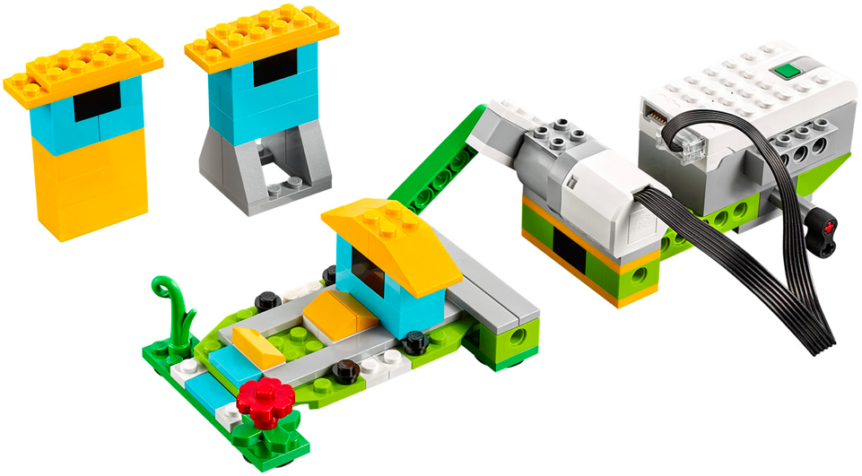
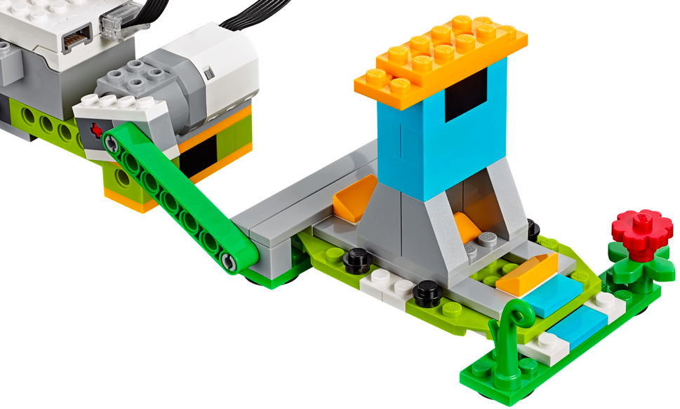
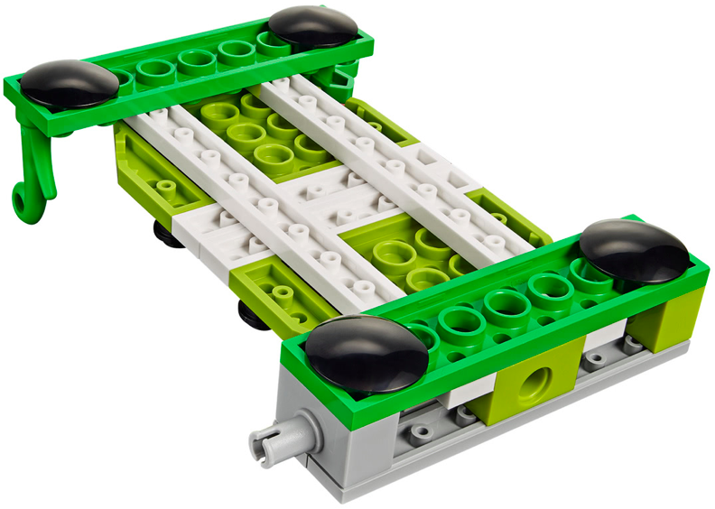
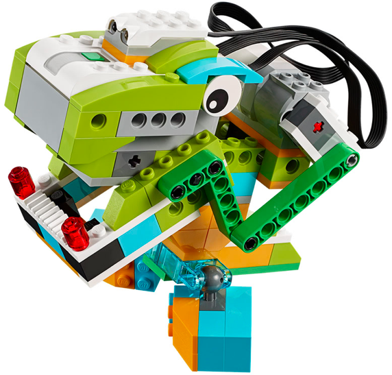
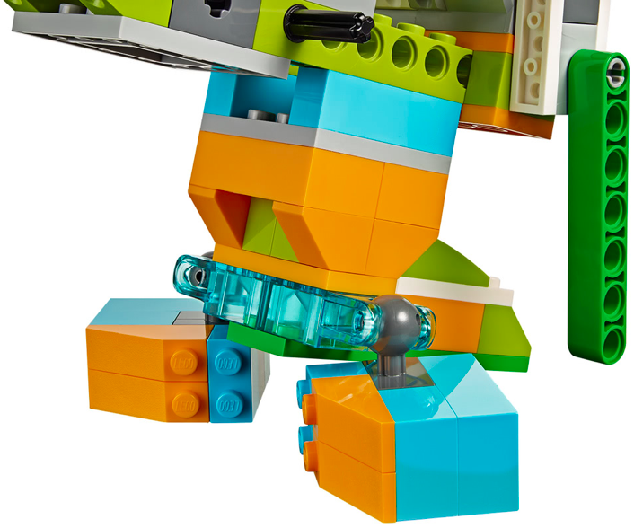
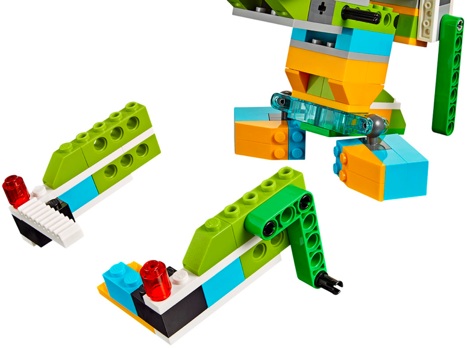

En este proyecto el alumno debe construir la base del los dos siguientes montajes. Debe hacer una serie
de retos iniciales para ver como se realiza el movimiento y como se traslada de un sitio a otro.
El primer montaje tiene las instrucciones para construir la parte de los engranajes. Este robot será la base
para los dos siguientes robots.
Los dos robots siguientes no tienen instrucciones y solo disponen de 3 fotos. Se construyen sobre la
base del montaje anterior.
El alumno debe aprender a usar el movimiento de manivela para alimentar mecanismos que funcionan de manera
lineal.
Además debe asentar sus conocimientos de construcción al hacer la tercera fase (el Tiranosaurio Rex).
• Hacer que el gire la manivela verde y que inicie con una palmada.
• Hacer que la manivela gire un número de vueltas determinado por el profesor.
• Hacer que la manivela gire al cabo de un tiempo transcurrido.



• Hacer que el simulador de terremotos se mueva hasta el número 5.
• Hacer que inicie el simulador cuando el robot detecte un sonido.
• Conectar el sensor de proximidad y hacer que inicie el movimiento cuando se pase la mano por delante.



• Hacer que el dinosaurio mueva la mandíbula, cuando se haga un sonido.
• Conectar el sensor de proximidad y hacer la siguiente secuencia:
Esperar y acercar la mano al dinosaurio para empezar a morder y ademas hacer sonidos.
{kind=link}
{kind=link}